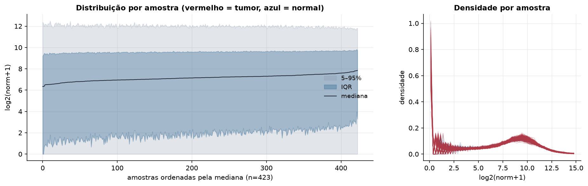
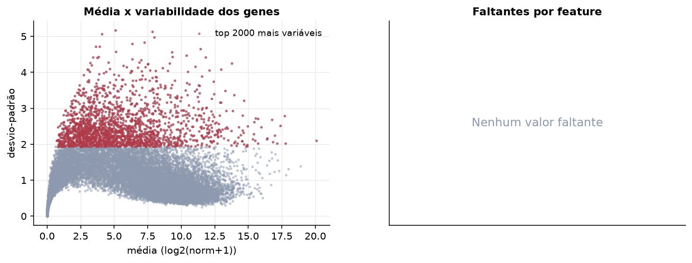
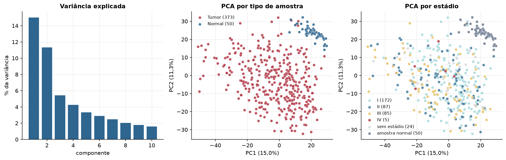
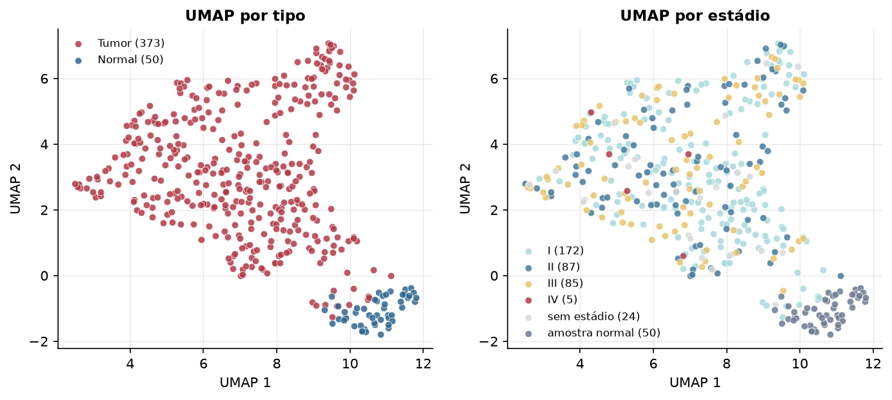
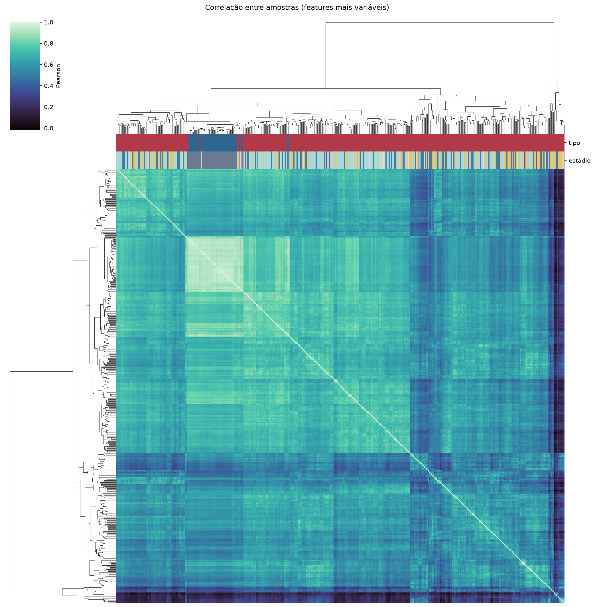
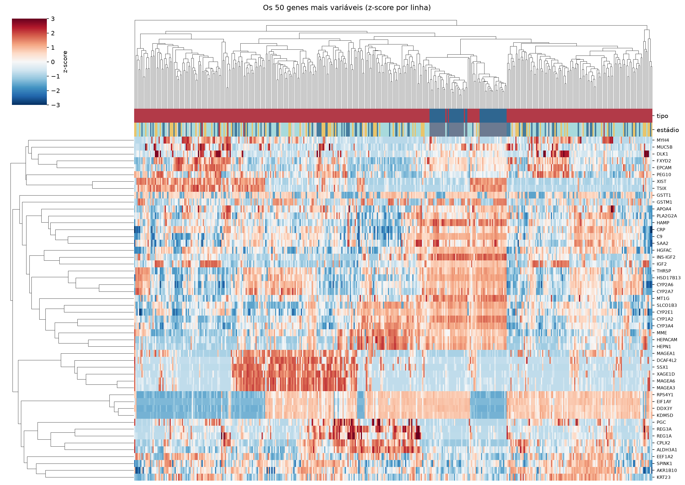
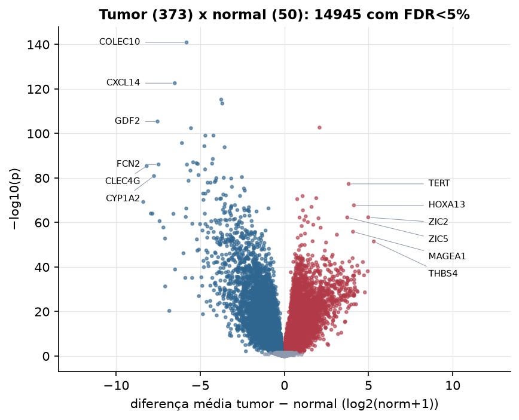
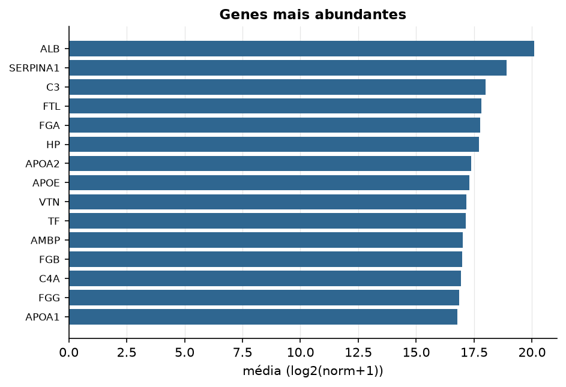

LIHC · RNA-seq (PanCanAtlas)
Illumina HiSeq, RSEM normalizado e corrigido por lote (EB++), log2(x+1) · gerado em 22/10/2026 00:11
20.531genes
373amostras tumorais
50amostras normais
0,0%valores faltantes
Fonte: PanCanAtlas EB++ via API do Xena
Estes valores já vêm normalizados e com correção de lote entre plataformas e centros. Servem bem para modelos gaussianos ou redes neurais; para um modelo de contagem use as contagens brutas do GDC.
Principais resultados
- 20.531 genes medidos em 423 amostras (373 tumorais e 50 normais); 0,0% dos valores estão faltando.
- Os dois primeiros componentes principais explicam 15,0% e 11,3% da variância das features mais variáveis.
- Correlação mediana entre amostras: 0,64.
- Amostras com correlação muito abaixo das demais (possíveis outliers técnicos): TCGA-BC-A10Q-01, TCGA-CC-5260-01, TCGA-CC-A1HT-01, TCGA-CC-A3M9-01, TCGA-CC-A7II-01, TCGA-CC-A7IJ-01, TCGA-CC-A9FV-01, TCGA-DD-A3A6-01, TCGA-DD-A4NA-01, TCGA-ED-A82E-01.
- Tumor x normal: 14945 genes diferentes com FDR < 5% (8898 maiores no tumor, 6047 maiores no normal; 50 pacientes têm o par tumor-normal).
- Mais aumentados no tumor: SFTA1P, TERT, TBCE, EBF2, UBE2Q1, HOXA13, SLCO1C1, CCT3.
- Mais reduzidos no tumor: COLEC10, CXCL14, ANGPTL6, ECM1, GDF2, CHST4, FAM180A, VIPR1.
- Associações clínicas com p < 0,05 nos componentes principais: PC1 com estádio (p=0.0012); PC2 com estádio (p=0.00016); PC1 com sexo (p=9.6e-06); PC1 com idade (p=1.1e-05); PC1 com sobrevida (p=0.003); PC2 com sobrevida (p=0.0021).
- Em mediana, 79,0% dos genes têm expressão acima de log2(norm+1)=1 em cada amostra.
Distribuição dos valores


Estrutura das amostras




Tumor x normal

Features mais diferentes entre tumor e normal
| diferenca_tumor_menos_normal | t | p | fdr | |
|---|---|---|---|---|
| COLEC10 | -5.818 | -41.8 | 1.25e-141 | 2.51e-137 |
| CXCL14 | -6.517 | -38.087 | 2.55e-123 | 2.57e-119 |
| ANGPTL6 | -3.757 | -35.194 | 5.98e-116 | 4.02e-112 |
| ECM1 | -3.692 | -38.965 | 3.43e-114 | 1.73e-110 |
| GDF2 | -7.54 | -47.693 | 4.2e-106 | 1.69e-102 |
| SFTA1P | 2.085 | 30.535 | 2.21e-103 | 7.42e-100 |
| CHST4 | -5.554 | -31.132 | 4.18e-103 | 1.21e-99 |
| FAM180A | -4.217 | -30.08 | 8.21e-100 | 2.04e-96 |
| VIPR1 | -4.701 | -36.177 | 9.09e-100 | 2.04e-96 |
| SFRP5 | -6.091 | -29.367 | 2.01e-96 | 4.06e-93 |
| RSPO3 | -4.757 | -32.86 | 5.02e-95 | 9.2e-92 |
| CXCL12 | -3.555 | -30.316 | 1.51e-94 | 2.54e-91 |
| CYP39A1 | -4.255 | -26.218 | 2.81e-89 | 4.36e-86 |
| TTC36 | -5.426 | -26.778 | 8.78e-88 | 1.26e-84 |
| C14orf68 | -5.224 | -25.673 | 2.16e-87 | 2.9e-84 |
| PTH1R | -4.299 | -33.795 | 3.26e-87 | 4.11e-84 |
| HHIP | -5.151 | -33.142 | 4.88e-87 | 5.79e-84 |
| FCN2 | -7.482 | -39.351 | 8.34e-87 | 9.35e-84 |
| BMPER | -5.793 | -42.127 | 9.65e-87 | 1.02e-83 |
| CLEC4G | -8.187 | -44.634 | 4.3e-86 | 4.34e-83 |
| NAT2 | -4.714 | -26.635 | 1.35e-84 | 1.3e-81 |
| HSD17B13 | -5.587 | -24.734 | 4.67e-84 | 4.28e-81 |
| SLC5A1 | -5.107 | -29.496 | 4.77e-82 | 4.18e-79 |
| CYP1A2 | -7.752 | -27.615 | 1.28e-81 | 1.08e-78 |
| IGFBP3 | -2.529 | -27.944 | 3.91e-81 | 3.15e-78 |
| KBTBD11 | -3.606 | -26.321 | 8.22e-81 | 6.38e-78 |
| NBLA00301 | -4.047 | -28.308 | 1.2e-80 | 8.94e-78 |
| NGFR | -3.162 | -25.236 | 1.72e-80 | 1.24e-77 |
| DCN | -4.089 | -24.196 | 1.55e-79 | 1.08e-76 |
| C9 | -5.698 | -23.697 | 1.8e-79 | 1.21e-76 |
Associação com variáveis clínicas
p-valores da associação dos três primeiros componentes principais (só tumores) com estádio (Kruskal-Wallis), sexo (Mann-Whitney), idade (Spearman) e sobrevida global (Cox univariado).
| estádio (Kruskal) | sexo (Mann-Whitney) | idade (Spearman) | sobrevida OS (Cox) | |
|---|---|---|---|---|
| PC1 (15,1%) | 0.001 | 9.56e-06 | 1.07e-05 | 0.003 |
| PC2 (8,1%) | 0.000164 | 0.928 | 0.643 | 0.002 |
| PC3 (5,9%) | 0.642 | 0.39 | 0.147 | 0.041 |
Mais abundantes
